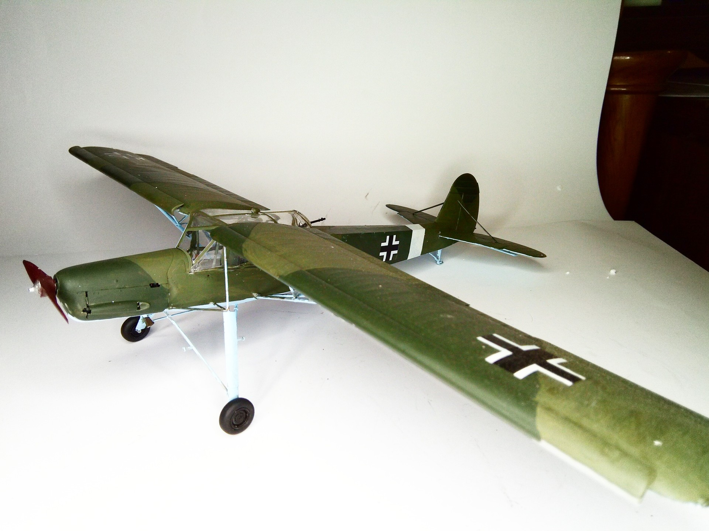
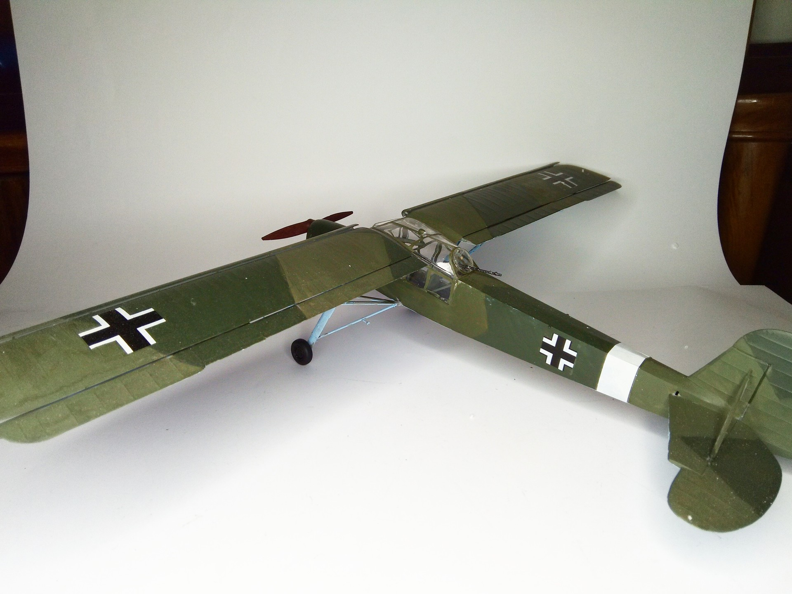

Aerei · scale model archive
Fiesler Fi156 Storch
Fiesler Fi156 Storch — Kit: Revell, Scale: 1/32. Awaiting decals for Mussolini Gran Sasso liberation #1/32 #Revell #Fi156

Photo gallery

English description
Awaiting decals for Mussolini Gran Sasso liberation
#1/32 #Revell #Fi156
Descrizione italiana
In attesa delle decals per la liberazione di Mussolini al Gran Sasso.